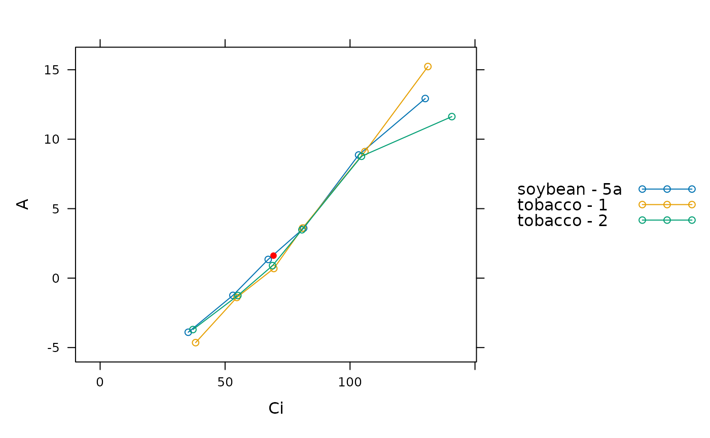
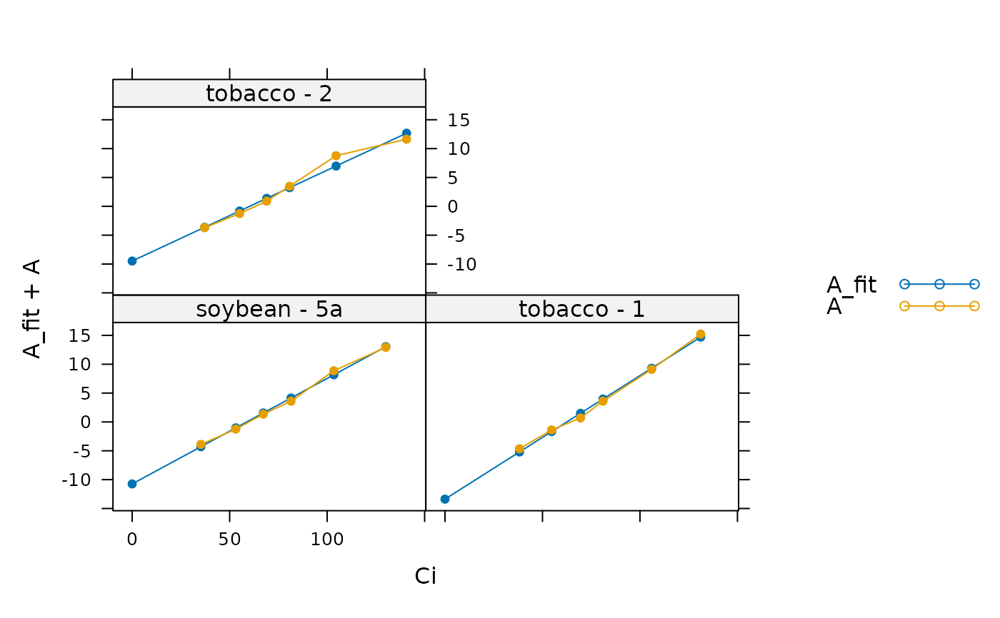

Calculate Rd using the Laisk method
calculate_rd_laisk.RdUses the Laisk method to estimate CiStar and Rd. This function
can accomodate alternative colum names for the variables taken from log files
in case they change at some point in the future. This function also checks the
units of each required column and will produce an error if any units are
incorrect.
Usage
calculate_rd_laisk(
exdf_obj,
curve_id_column_name,
ci_lower = 40,
ci_upper = 120,
a_column_name = 'A',
ci_column_name = 'Ci'
)Arguments
- exdf_obj
An
exdfobject.- curve_id_column_name
The name of the column in
exdf_objthat can be used to split it into individual response curves.- ci_lower
Lower end of
Cirange used for linear fits ofAnvs.Ci.- ci_upper
Upper end of
Cirange used for linear fits ofAnvs.Ci.- a_column_name
The name of the column in
exdf_objthat contains the net CO2 assimilation rateAninmicromol m^(-2) s^(-1).- ci_column_name
The name of the column in
exdf_objthat contains the intercellular CO2 concentrationCiinmicromol mol^(-1).
Details
The Laisk method is a way to estimate Rd and CiStar for a C3
plant. Definitions of these quantities and a description of the theory
underpinning this method is given below.
For a C3 plant, the net CO2 assimilation rate An is given by
An = Vc - Rp - Rd,
where Vc is the rate of RuBP carboxylation, Rp is the rate of
carbon loss due to photorespiration, and Rd is the rate of carbon loss
due to non-photorespiratory respiration (also known as the rate of day
respiration). Because RuBP carboxylation and photorespiration both occur due
to Rubisco activity, these rates are actually proportional to each other:
Rp = Vc * GammaStar / Cc,
where Cc is the CO2 concentration in the chloroplast (where Rubisco is
located) and GammaStar will be discussed below. Using this expression,
the net CO2 assimilation rate can be written as
An = Vc * (1 - GammaStar / Cc) - Rd.
When Cc is equal to GammaStar, the net assimilation rate is
equal to -Rd. For this reason, GammaStar is usually referred to
as the CO2 compensation point in the absence of day respiration.
In general, Cc is related to the intercellular CO2 concentration
Ci according to
Ci = Cc + An / gmc,
where gmc is the mesophyll conductance to CO2 diffusion. When Cc
is equal to GammaStar, we therefore have
Ci = GammaStar - Rd / gmc. This special value of Ci is referred
to as CiStar, and can be understood as the value of Ci where
Cc = GammaStar and An = -Rd. Note that the values of
GammaStar and CiStar depend on Rubisco properties, mesophyll
conductance, and the ambient O2 concentration, but not on the incident light
intensity.
These observations suggest a method for estimating Rd from a leaf:
Measure An vs. Ci curves at several light intensities, and find
the value of Ci where the curves intersect with each other. This will
be CiStar, and the corresponding value of An will be equal to
-Rd.
In practice, it is unlikely that the measured curves will all exactly
intersect at a single point. In calculate_rd_laisk, the value of
CiStar is chosen as the value of Ci that minimizes the variance
of the corresponding An values. It is also unlikely that any of the
measured points exactly correspond to Ci = CiStar, so
calculate_rd_laisk uses a linear fit of each curve at low Ci to
find An at arbitrary values of Ci.
Note: it is possible that Rd depends on incident light intensity, an
issue which complicates the application of the Laisk method.
References:
Yin, X., Sun, Z., Struik, P. C. & Gu, J. "Evaluating a new method to estimate the rate of leaf respiration in the light by analysis of combined gas exchange and chlorophyll fluorescence measurements." Journal of Experimental Botany 62, 3489–3499 (2011) [doi:10.1093/jxb/err038 ].
Value
This function returns a list with the following named elements:
Ci_star: The estimated value ofCiStar.Rd: The estimated value ofRd.parameters: Anexdfobject with the slope and intercept of each linear fit used to estimateCi_starandRd.fits: Anexdfobject based onexdf_objthat also includes the fitted values ofAnin a new column whose name isa_column_namefollowed by_fit(for example,A_fit).
Examples
# Read an example Licor file included in the PhotoGEA package
licor_file <- read_gasex_file(
system.file('extdata', 'c3_aci_1.xlsx', package = 'PhotoGEA', mustWork = TRUE)
)
# Define a new column that uniquely identifies each curve
licor_file[, 'species_plot'] <-
paste(licor_file[, 'species'], '-', licor_file[, 'plot'] )
# Organize the data
licor_file <- organize_response_curve_data(
licor_file,
'species_plot',
c(9, 10, 16),
'CO2_r_sp'
)
# Apply the Laisk method. Note: this is a bad example because these curves were
# measured at the same light intensity, but from different species. Because of
# this, the results are not meaningful.
laisk_results <- calculate_rd_laisk(licor_file, 'species_plot', 20, 150)
# Get estimated values
print(laisk_results$Rd)
#> [1] -1.617453
print(laisk_results$Ci_star)
#> [1] 69.37657
# Plot each curve and overlay the calculated point of intersection as a filled
# red circle
lattice::xyplot(
A ~ Ci,
group = species_plot,
data = laisk_results$fits$main_data,
type = 'b',
auto = TRUE,
panel = function(...) {
lattice::panel.xyplot(...)
lattice::panel.points(
-laisk_results$Rd ~ laisk_results$Ci_star,
type = 'p',
col = 'red',
pch = 16
)
}
)

# Plot each curve and its linear fit
lattice::xyplot(
A_fit + A ~ Ci | species_plot,
data = laisk_results$fits$main_data,
type = 'b',
pch = 16,
auto = TRUE
)
